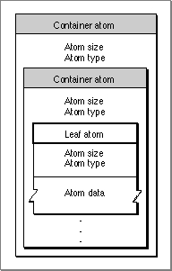

The Layout of a QuickTime Atom
Figure 4-3 shows the layout of a sample QuickTime atom. Each atom carries its own size and type information as well as its data. Throughout this chapter, the name of a container atom (an atom that contains other atoms, including other container atoms) is printed across a horizontal gray band, and the name of a leaf atom (an atom that contains no other atoms) is printed across a horizontal drop shadow box.
Leaf atoms contain data, usually in the form of tables.Figure 4-3 A sample QuickTime atom
